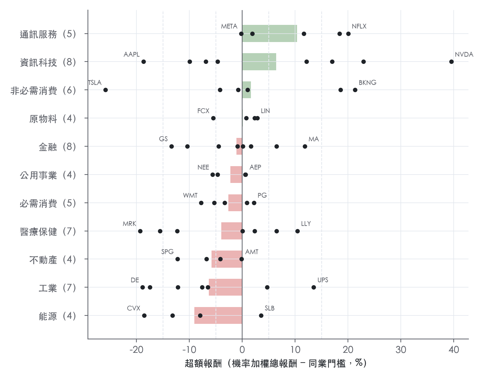

62 檔：買進 7、加碼 7、中立 25、減碼 16、賣出 7；平均超額 -0.8%；集體押注 1 個類股
本版 2026-10-14
| 涵蓋 | 62 檔 |
| 評等分布 | 買進 7、加碼 7、中立 25、減碼 16、賣出 7 |
| 平均超額 | -0.8% |
| 集體押注 | 能源看空 |
| 總經前提 | 2026-10-14：通膨黏著、聯準會高檔不降，成長放慢但不衰退 |
62 檔：買進 7、加碼 7、中立 25、減碼 16、賣出 7；平均超額 -0.8%；集體押注 1 個類股
超額為負的股票占 53%；中位數 -0.5%。
買進＋加碼平均超額 +16.4%，減碼＋賣出平均 -12.1%。
32 檔落在評等邊界（距離鄰近評等 3 點以內），評等可能因雜訊翻轉。

| 類股 | 檔數 | 買進／加碼／中立／減碼／賣出 | 平均超額 | 平均預期總報酬 | 最看多 | 最看空 | 讀哪個總經變數 | 前提隱含的總經影響 | 集體押注 |
|---|---|---|---|---|---|---|---|---|---|
| 通訊服務 | 5 | 2／1／2／0／0 | +10.3% | +19.6% | NFLX | META | 10 年期公債 % | — | — |
| 資訊科技 | 8 | 3／1／1／2／1 | +6.4% | +15.9% | NVDA | AAPL | 10 年期公債 % | — | — |
| 非必需消費 | 6 | 2／0／3／0／1 | +1.6% | +11.4% | BKNG | TSLA | 實質 GDP（未來 4 季累計 %）、核心 PCE（未來 4 季累計 %） | — | — |
| 原物料 | 4 | 0／0／3／1／0 | +0.1% | +8.8% | LIN | FCX | 銅 美元／公噸、美元廣義指數 | +0.0%（2 檔） | — |
| 金融 | 8 | 0／2／4／2／0 | -1.1% | +9.1% | MA | GS | 2 年期公債 %、信用利差 Baa−10 年 pp | -1.9%（5 檔） | — |
| 公用事業 | 4 | 0／0／3／1／0 | -2.3% | +7.4% | AEP | NEE | 10 年期公債 % | +0.0%（2 檔） | — |
| 必需消費 | 5 | 0／0／3／2／0 | -2.7% | +6.2% | PG | WMT | 核心 PCE（未來 4 季累計 %） | +0.0%（1 檔） | — |
| 醫療保健 | 7 | 0／2／2／1／2 | -4.0% | +6.1% | LLY | MRK | — | +0.0%（2 檔） | — |
| 不動產 | 4 | 0／0／2／2／0 | -5.8% | +4.2% | AMT | SPG | 10 年期公債 %、信用利差 Baa−10 年 pp | -0.7%（4 檔） | — |
| 工業 | 7 | 0／1／1／3／2 | -6.4% | +3.4% | UPS | DE | 實質 GDP（未來 4 季累計 %） | -1.6%（2 檔） | — |
| 能源 | 4 | 0／0／1／2／1 | -9.1% | +1.2% | SLB | CVX | WTI 美元／桶 | -5.1%（3 檔） | 看空 |
前提隱含的總經影響＝個股對該總經變數的股價敏感度（扣掉大盤，|t| ≥ 2 才算）×（本行前提第 4 季 − 近季）；和平均超額同號＝我們的看法有總經支撐，反號＝看法靠個股理由逆著總經。總經變數對照 本行總經前提 2026-10-14（通膨黏著、聯準會高檔不降，成長放慢但不衰退）。
| 股票 | 類股 | 評等 | 超額 | 預期總報酬 | 現價 | 加權目標價 | 報告日 | 邊界 |
|---|---|---|---|---|---|---|---|---|
| NVDA | 資訊科技 | 買進 | +39.5% | +49.2% | 229.28 | 342 | 2026-10-09 | |
| AVGO | 資訊科技 | 買進 | +22.9% | +32.6% | 349.57 | 461 | 2026-09-28 | |
| BKNG | 非必需消費 | 買進 | +21.3% | +31.5% | 160.34 | 190 | 2026-10-09 | |
| NFLX | 通訊服務 | 買進 | +20.0% | +28.0% | 70.30 | 90 | 2026-10-09 | |
| AMZN | 非必需消費 | 買進 | +18.5% | +28.2% | 251.52 | 322 | 2026-10-02 | |
| DIS | 通訊服務 | 買進 | +18.3% | +26.3% | 108.05 | 135 | 2026-10-09 | |
| ORCL | 資訊科技 | 買進 | +17.0% | +27.2% | 142.30 | 179 | 2026-10-02 | 距加碼 2.0 點 |
| UPS | 工業 | 加碼 | +13.5% | +21.5% | 94.57 | 108 | 2026-10-09 | 距買進 1.5 點 |
| CRM | 資訊科技 | 加碼 | +12.2% | +22.4% | 229.13 | 279 | 2026-10-09 | 距買進 2.8 點 |
| MA | 金融 | 加碼 | +11.8% | +22.1% | 552.26 | 671 | 2026-10-02 | |
| T | 通訊服務 | 加碼 | +11.6% | +21.8% | 24.90 | 29 | 2026-09-28 | |
| LLY | 醫療保健 | 加碼 | +10.4% | +20.6% | 1,184.78 | 1,422 | 2026-09-28 | |
| BLK | 金融 | 加碼 | +6.5% | +16.7% | 1,082.39 | 1,241 | 2026-10-09 | 距中立 1.5 點 |
| UNH | 醫療保健 | 加碼 | +6.5% | +16.7% | 371.90 | 425 | 2026-10-02 | 距中立 1.5 點 |
| RTX | 工業 | 中立 | +4.7% | +14.5% | 185.97 | 210 | 2026-10-09 | 距加碼 0.3 點 |
| SLB | 能源 | 中立 | +3.6% | +13.8% | 48.95 | 55 | 2026-10-09 | 距加碼 1.4 點 |
| LIN | 原物料 | 中立 | +2.8% | +11.4% | 479.48 | 528 | 2026-10-02 | 距加碼 2.2 點 |
| ABT | 醫療保健 | 中立 | +2.3% | +12.5% | 99.60 | 110 | 2026-10-09 | 距加碼 2.7 點 |
| NEM | 原物料 | 中立 | +2.3% | +10.3% | 117.84 | 129 | 2026-10-09 | 距加碼 2.7 點 |
| PG | 必需消費 | 中立 | +2.2% | +7.9% | 149.03 | 156 | 2026-09-28 | 距加碼 2.8 點 |
| GOOGL | 通訊服務 | 中立 | +1.9% | +12.1% | 342.75 | 383 | 2026-09-28 | |
| V | 金融 | 中立 | +1.6% | +11.9% | 385.45 | 429 | 2026-10-09 | |
| NKE | 非必需消費 | 中立 | +1.0% | +9.0% | 34.71 | 36 | 2026-10-09 | |
| PEP | 必需消費 | 中立 | +0.9% | +11.1% | 125.97 | 134 | 2026-10-09 | |
| SHW | 原物料 | 中立 | +0.7% | +8.7% | 319.36 | 344 | 2026-10-09 | |
| AEP | 公用事業 | 中立 | +0.6% | +9.8% | 122.81 | 131 | 2026-10-09 | |
| DUK | 公用事業 | 中立 | +0.5% | +10.8% | 114.13 | 122 | 2026-10-02 | |
| PGR | 金融 | 中立 | +0.1% | +10.3% | 217.43 | 226 | 2026-10-09 | |
| ABBV | 醫療保健 | 中立 | +0.0% | +10.3% | 276.47 | 298 | 2026-10-09 | |
| AMT | 不動產 | 中立 | -0.2% | +9.8% | 162.20 | 171 | 2026-10-02 | |
| META | 通訊服務 | 中立 | -0.2% | +10.0% | 718.67 | 789 | 2026-10-09 | |
| MCD | 非必需消費 | 中立 | -0.8% | +9.4% | 235.23 | 250 | 2026-10-09 | |
| BAC | 金融 | 中立 | -0.9% | +9.3% | 54.32 | 58 | 2026-10-09 | |
| COST | 必需消費 | 中立 | -3.3% | +5.4% | 920.65 | 965 | 2026-10-02 | 距減碼 1.7 點 |
| EQIX | 不動產 | 中立 | -4.2% | +5.9% | 1,032.60 | 1,073 | 2026-10-12 | 距減碼 0.8 點 |
| HD | 非必需消費 | 中立 | -4.2% | +5.8% | 290.74 | 298 | 2026-10-09 | 距減碼 0.8 點 |
| JPM | 金融 | 中立 | -4.5% | +5.8% | 332.38 | 346 | 2026-10-02 | 距減碼 0.5 點 |
| MU | 資訊科技 | 中立 | -4.7% | +0.6% | 1,053.98 | 1,060 | 2026-09-28 | 距減碼 0.3 點 |
| SO | 公用事業 | 中立 | -4.7% | +4.5% | 86.17 | 87 | 2026-10-09 | 距減碼 0.3 點 |
| KO | 必需消費 | 減碼 | -5.3% | +4.9% | 88.05 | 90 | 2026-10-09 | 距中立 0.3 點 |
| FCX | 原物料 | 減碼 | -5.5% | +4.7% | 72.04 | 75 | 2026-10-02 | 距中立 0.5 點 |
| NEE | 公用事業 | 減碼 | -5.6% | +4.6% | 76.83 | 78 | 2026-10-02 | 距中立 0.6 點 |
| HON | 工業 | 減碼 | -6.5% | +3.7% | 207.73 | 211 | 2026-10-09 | 距中立 1.5 點 |
| PLD | 不動產 | 減碼 | -6.8% | +3.3% | 132.47 | 133 | 2026-10-12 | 距中立 1.8 點 |
| MSFT | 資訊科技 | 減碼 | -6.9% | +3.3% | 535.07 | 549 | 2026-10-09 | 距中立 1.9 點 |
| UNP | 工業 | 減碼 | -7.6% | +1.7% | 274.10 | 273 | 2026-09-28 | 距中立 2.6 點 |
| WMT | 必需消費 | 減碼 | -7.8% | +1.9% | 111.35 | 113 | 2026-10-09 | 距中立 2.8 點 |
| COP | 能源 | 減碼 | -8.0% | +2.2% | 134.10 | 134 | 2026-10-09 | |
| AMD | 資訊科技 | 減碼 | -9.9% | +0.0% | 608.10 | 608 | 2026-10-09 | |
| WFC | 金融 | 減碼 | -10.4% | -0.2% | 83.55 | 82 | 2026-10-09 | |
| GE | 工業 | 減碼 | -12.2% | -1.9% | 309.56 | 302 | 2026-10-02 | 距賣出 2.8 點 |
| SPG | 不動產 | 減碼 | -12.2% | -2.0% | 200.95 | 188 | 2026-10-02 | 距賣出 2.8 點 |
| JNJ | 醫療保健 | 減碼 | -12.3% | -2.2% | 261.44 | 250 | 2026-10-09 | 距賣出 2.7 點 |
| XOM | 能源 | 減碼 | -13.2% | -3.0% | 172.15 | 163 | 2026-10-12 | 距賣出 1.8 點 |
| GS | 金融 | 減碼 | -13.4% | -3.2% | 895.32 | 849 | 2026-10-09 | 距賣出 1.6 點 |
| TMO | 醫療保健 | 賣出 | -15.6% | -6.1% | 658.02 | 616 | 2026-10-09 | 距減碼 0.6 點 |
| CAT | 工業 | 賣出 | -17.5% | -7.3% | 800.47 | 736 | 2026-10-09 | 距減碼 2.5 點 |
| CVX | 能源 | 賣出 | -18.6% | -8.3% | 211.98 | 187 | 2026-10-09 | |
| AAPL | 資訊科技 | 賣出 | -18.7% | -8.5% | 336.64 | 307 | 2026-10-09 | |
| DE | 工業 | 賣出 | -18.9% | -8.6% | 620.93 | 561 | 2026-10-09 | |
| MRK | 醫療保健 | 賣出 | -19.4% | -9.2% | 145.60 | 129 | 2026-10-09 | |
| TSLA | 非必需消費 | 賣出 | -25.9% | -15.7% | 382.70 | 323 | 2026-10-09 |
本頁由 equity-desk 程式彙總，供個人研究參考，不構成投資建議。